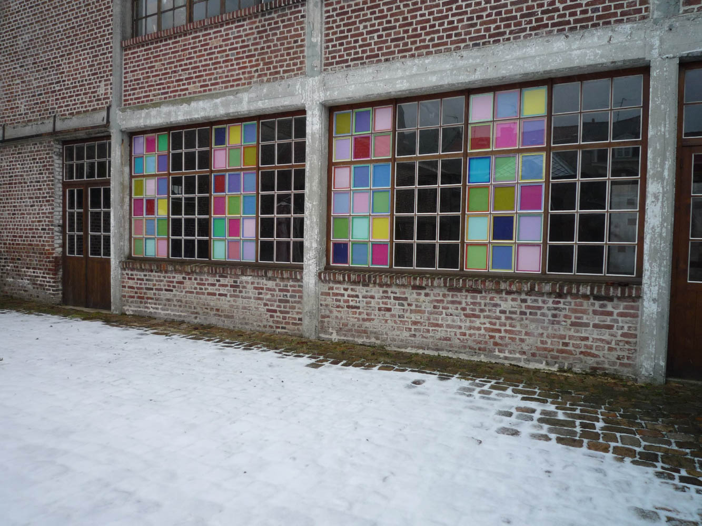
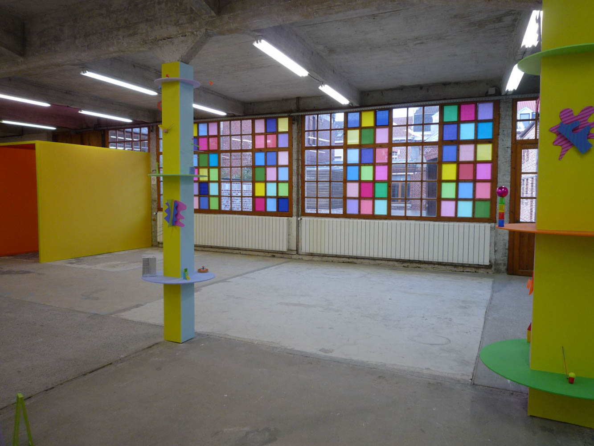
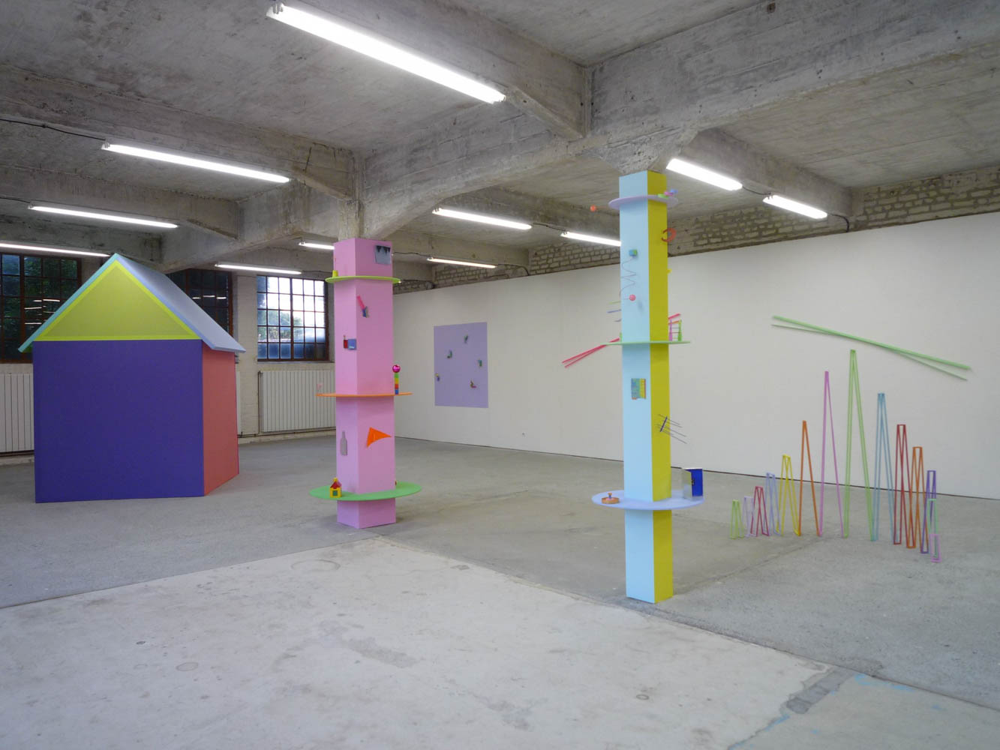
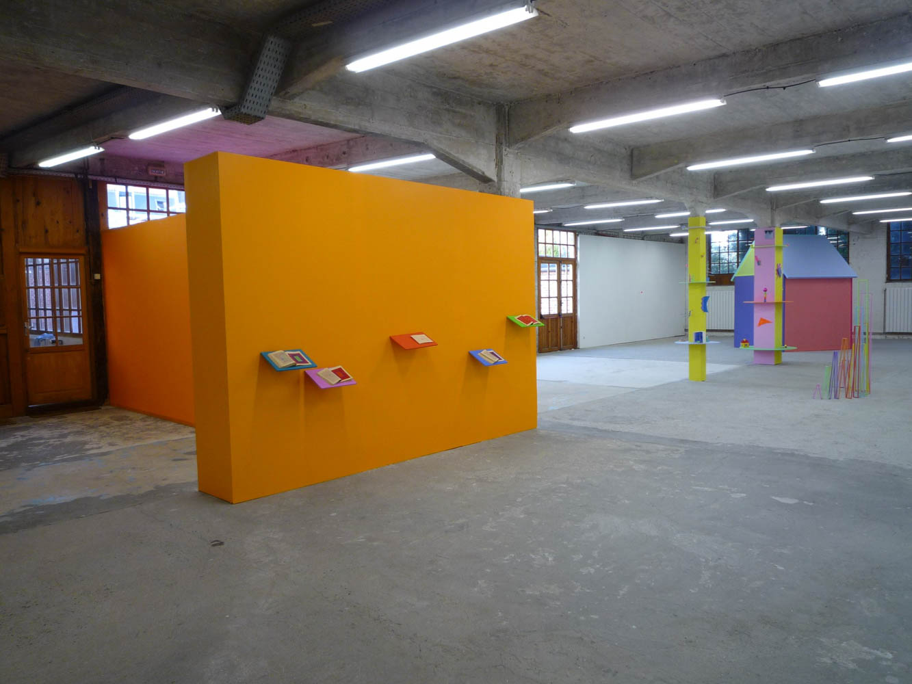
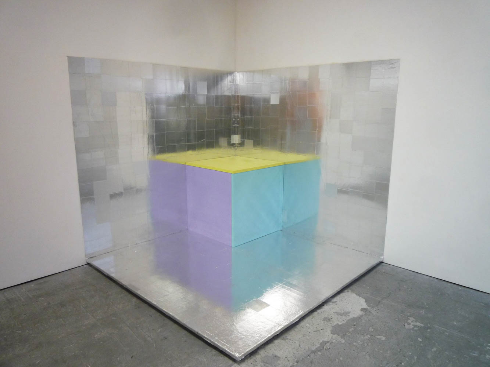
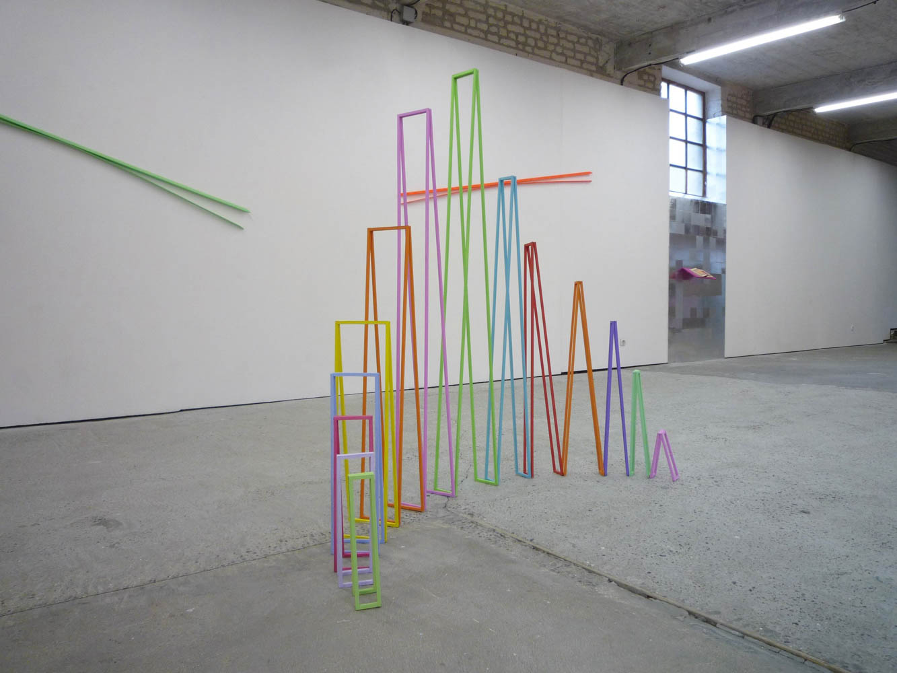

<!DOCTYPE html>
<html lang="fr">

<head>
    <meta charset="UTF-8">
    <meta http-equiv="X-UA-Compatible" content="IE=edge">
    <meta name="viewport" content="width=device-width, initial-scale=1.0">
    <link rel="stylesheet" href="../../sass/main.css">
    <title>François Schmitt</title>
</head>

<body>
    

    <header class="header">
        <a href="../../accueil.html">
            <h1>L'H du Siège <br> centre d'art contemporain</h1>
        </a>
        <nav>
            <a href="../../accueil.html">Accueil</a>
            <a href="../../centreArt.html">Le centre d'art</a>
            <a href="../../archives.html">Archives</a>
            <a href="../../editions.html">Editions</a>
            <a href="../../mediation.html">Médiation</a>
        </nav>
    </header>

    <figure class="expoFigure">
        <div class="imageContainer">
            
        </div>
    </figure>

    <main>

        <section>
            <h2>François Schmitt</h2>
            <h4>3 mois pour en arriver là</h4><br><br>
            <h5>Something nasty in the nursery</h5>

            <!-- Partie visible -->
            <p class="extrait">Il y a des couleurs vives : jaune,rose, bleu, mauve, vert, etc.
                Ilyadesmatériauxtranslucidesouréfléchissants:tissucoloré,papier
                d’aluminium,calques,jeux de transparence avec les fenêtres,etc.
                Il y a des petits objets issus du quotidien, du bricolage et des
                jouets d’enfants : billes, cure-dents, épingles, plumes, spatules,
                fléchettes, balles de ping-pong,règles graduées,fanions, etc.
                Il y a des montages mobiles : toupies, pivots, leviers, bascules,
                articulations, équilibres, suspensions, etc.</p>
            <br>

            <!-- Suite du texte -->
            <p class="textComplet"><strong>Entrez dans la danse</strong><br>
                Tous ces éléments produisent un curieux sentiment de mouvement immobile. Les forts contrastes des
                aplats de couleur
                vive
                créent une vibration de l’entièreté de l’espace. Les couleurs
                complémentaires et les contrastes simultanés provoquent une
                sorte de jeu de ping-pong ou de flipper optique par lequel le
                regard rebondit d’un point à un autre, est chassé d’un ton acide
                vers une nuance plus apaisée, traverse un plan translucide et
                baigne dans un brouillard orange avant de buter sur un aplat
                violet opaque, roule avec les balles, ricoche sur une surface
                aluminium et se trouve pris d’une agitation infinie, comme sous
                l’effet d’une excitation quasi électrique. La frénésie n’est momentanément suspendue que par le détail
                d’un objet, dont
                la scrutation ne fait que ponctuer et relancer rythmiquement le
                mouvement général. <br>
                mouvement général.
                À cet égard, les différents dispositifs aménagés par François
                Schmitt (les piliers,la cabane,les carnets,le cube,les différentes
                petites sculptures…) opèrent comme des pôles ou des nœuds
                (ou, alternativement, comme des ralentisseurs et des accélérateurs) dans le flux d’une installation
                globale.
                L’exposition est un
                parcours conçu selon un enchaînement de mouvements giratoires : circulerle long de la baie vitrée,entrer
                parle porche
                coloré,
                contourner la cimaise argentée,tourner autour des trois piliers
                pour regarder les objets disposés sur les cercles qui les enserrent,faire le tour de la cabane, y entrer
                et en
                ressortir, actionner
                la rotation des longues baguettes, surle mur du fond… Alors que
                le travail de François Schmitt est souvent perçu comme une accumulation de petites choses, il se révèle
                ici dans sa
                dimension
                proliférante et englobante, à même de transfigurer de vastes
                espaces. Le mouvement, qui est l’un des défis traditionnels de
                la peinture, est ici confié au corps du regardeur lui-même, un
                corps dont la déambulation va activerles enchaînements possibles et les remontages permanents de cet
                espace pictural.
                Les petites sculptures sont des montages d’objets hétéroclites
                jouant,pourla plupart,surlesnotions d’équilibre et de délicatesse.
                Les couleurs, les lignes, les formes, les textures, les masses, les
                dimensions, tout est finement réglé en un accord quasi musical
                qui produit un effet proche de la grâce. En équilibre délicat, ces
                petits assemblages oscillent aubord de l’enchantement et dudérisoire, sans jamais basculer totalement ni
                dans l’un (ce
                serait la
                joliesse, le kitsch, l’emphase), ni dans l’autre (ce serait le banal, le
                trivial, le contentement).
                Le travail sur les transparences, les reflets et les lumières colorées contribue également à élaborer
                des espaces
                instables. L’œil
                y est sans cesse sollicité, souvent de manière contradictoire, il
                saute d’une saturation à une autre,d’un mur marouflé à un petit
                objet fragile, d’une sculpture à son reflet déformé, mesurant
                combien l’équilibre se définit par la menace du déséquilibre. <br><br>
                <strong>L’image sans issue</strong><br>
                L’image sans issue
                La capacité de François Schmitt à développer une peinture qui
                déborde l’image et ses supports, et se trouve en mesure d’englober et modifiertout l’espace
                disponible,repose sur des
                effets
                de seuil. Avec la sortie du tableau, la question des limites n’est
                pas évacuée, elle est seulement déplacée.Modifiée par l’artiste,
                la baie vitrée de L’H du Siège fonctionne ainsi selon trois registres :une signalétique,une image,une
                limite.Des petits
                châssis
                carrés,tendus de toile imprimée de couleur,ont été fixés derrière
                les carreaux, en une composition qui devient ainsi la première
                œuvre visible parle visiteur, comme la formule de l’ensemble du
                travail de François Schmitt etla manifestation visuelle de la séparation entre deux espaces autonomes.
                L’espace de la
                galerie n’est
                pas de même nature que l’espace extérieur, il n’est pas simplement un lieu d’accueil pour des œuvres
                indépendantes ; il
                est
                partie prenante de l’œuvre. <br>
                La porte d’entrée a été prolongée par un petit couloir construit
                de tissus colorés tendus qui fait office de sas entre l’extérieur et
                l’intérieur. Plus loin, surla gauche,la petite maison reproduit un
                archétype (un plan rectangulaire, quatre murs, un toit à double pente,une ouverture) et pose du
                construit dans le bâti de l’espace
                d’exposition. Les carnets surlesquels François Schmitt accumule,
                page après page, des mosaïques géométriques en coloriant les
                petits carreaux,rejouent à une échelle réduite le jeu des châssis
                colorés sur la façade. Leur titre générique — Passe passe le temps
                — indique leur nature et leur fonction, celles de passe-temps,
                comme pour tromper la surveillance de l’histoire sous laquelle
                se tient tout peintre. Le passe-temps est à entendre comme
                passe-muraille ou passe-partout. <br>
                Ces différents dispositifs affirment le caractère enclos de la
                couleur “schmittienne”. On ne peut confortablement passer de
                la contemplation d’une pièce à une autre,toutes se contaminent
                et entrent dans un rapport d’interdépendance qui fait que l’on
                ne sait pas précisément où s’arrête la sculpture et où commence
                la peinture, de même qu’on ne distingue pas clairement ce qui
                est œuvre et ce qui est scénographie. Le regardeur lui-même se
                trouve incorporé dans l’espace picturalisé.Techniquement,tout
                repose essentiellement sur des ready-mades aidés, ce qui révèle
                la manière dont François Schmitt envisage son travail : il n’y a
                pas le monde quotidien et le monde de l’art, il n’y a qu’un seul
                monde où l’artiste glane formes et couleurs.Toute échappatoire
                est donc impossible. <br><br>
                <strong>La couleur toxique ?</strong><br>
                Ce caractère enclos indique que l’on tronquerait l’œuvre de François Schmitt à la considérer sous les
                seuls aspectsde
                l’harmonie et
                de l’enchantement coloré. On pourrait certes dire cette peinture
                pétillante pour ce qu’elle recèle de léger,de vif et de ludique,mais
                elle est aussi acide et piquante.Sapolychromie saturée est comparableàcelledes fleurs
                tropicalesetbatraciens
                vénéneuxdontl’éclat
                vaut avertissement.Ces couleurs vives—tropvives—,ces motifs
                et ces petits jouets surjouentla séductionet dévoilentfinalement
                leurs ambiguïtés.N’y a-t-onpas vul’omniprésencede toutes sortes
                de petites piques,comme autant de dards,aiguillons et barbillons
                dissimulés sous un aspect enchanteur ? <br>
                Outre celles de l’histoire de l’art, les références le plus souvent
                associées à l’œuvre de François Schmitt sont liées au monde de
                l’enfance,mais c’est bien un point de vue d’adulte que celui qui
                affecte d’oublier que l’enfance est le territoire des affects à vif.
                Le conte de fée, la fête foraine, les clowns, les fêtes costumées,
                les parties de cache-cache ou la chambre du bébé sont autant
                de motifs charmants — largement utilisés par le cinéma —
                susceptibles de se retourner au moindre déséquilibre (or, les
                sculptures de François Schmitt sont toujours en équilibre
                instable). Dans le quatorzième épisode de la cinquième saison
                (1967) de la série Chapeau melon et bottes de cuir,des diplomates
                et des hauts fonctionnaires retombent en enfance au contact
                de jouets colorés livrés par une mystérieuse nourrice en chaise
                roulante ! Le risque est alors que le chatoyant devienne aveuglant, que la beauté tourne à la mièvrerie,
                que le sucré vire au sirupeux, que l’artifice dégénère en rouerie, que le décoratif se
                fasse simple décoration, que la délicatesse ne soit plus qu’afféterie et que le charme se révèle
                sortilège. L’équilibre
                n’estjamais
                si remarquable que lorsqu’il est particulièrement périlleux. <br><br>
                Karim Ghaddab
            </p>
            <br>
            <a class="lirePlus">Lire la suite</a>
        </section>


        <section class="vueExpo">
            <h2>Vues d'exposition</h2><br>

            <div class="carouselExpo">

                <div class="image-popup">
                    
                </div>

                <div class="image-popup">
                    
                </div>

                <div class="image-popup">
                    
                </div>

                <div class="image-popup">
                    
                </div>

                <div class="image-popup">
                    
                </div>

                <div class="image-popup">
                    
                </div>

                <div class="overlay"></div>

            </div>

        </section>

    </main>


    <footer>
        <p class="footerLeft">L’H du Siège <br>
            15 rue de l’Hôpital de Siège <br>
            59300 Valenciennes</p>

        <p class="footerCenter"> Tél. : +33 (0)3 27 36 06 61 <br> email : hdusiege@free.fr</p>

        <div class="footerRight">
            <a href="https://twitter.com/LHduSiege">Twitter</a>
            <a href="https://www.facebook.com/hdusiege.galerie/">Facebook</a>
            <a href="https://www.instagram.com/galerielhdusiege/">Instagram</a>
        </div>
    </footer>

    <script src="../../script.js"></script>
</body>

</html>